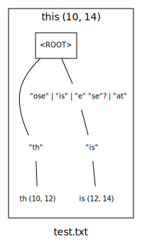

If you've got a debugger you can simply step through a match to see
what it does and where it goes wrong. All the objects you may want to
examine along the way have nice
toString()
methods, which makes things easier. Even for the experienced, though,
this is a convoluted and slow spelunking expedition. You can speed
things up by the positioning of conditional breakpoints, but you may
want to try the other methods listed below first.
Assign a
PrintStream
to which debugging information should be sent and the grammar will
provide a trace of the entire matching process. This is in effect a
very detailed, human readable log. E.g.,
String[] rules = {
//
"ROOT = 'a' | 'b'",//
};
Grammar g = new Grammar(rules);
g.lookingAt("babs", new Options().trace(System.err));
produces
<ROOT> at 0 (_"babs ")
stack:
<ROOT> 0 ::
<"a"> at 0 (_"babs ")
stack:
<"a"> 0 :: <ROOT> 0 ::
post match:
<"a"> at 0 (_"babs ") returning null
stack:
<"a"> 0 :: <ROOT> 0 ::
<"b"> at 0 (_"babs ")
stack:
<"b"> 0 :: <ROOT> 0 ::
post match:
<"b"> at 0 (_"babs ") returning ("b": 0, 1) = 'b'
and so forth.
Even if the grammar fails to match, if you ask it to it will retain
the rightmost
Match
it obtained while trying to apply the grammar to the character
sequence. This allows you to examine the failure point in the string
to discover where your rule goes wrong. E.g.,
String[] rules = {
//
"ROOT = 'a'++ 'b'",//
};
Grammar g = new Grammar(rules);
Matcher m = g.lookingAt("aaaaaargh", new Options().keepRightmost(true));
System.out.println(m.match());
System.out.println(m.rightmostMatch());
produces
null
("a"++: 0, 6 [("a": 0, 1), ("a": 1, 2), ("a": 2, 3), ("a": 3, 4), ("a": 4, 5), ("a": 5, 6)])
When all else fails, or sometimes long before all else fails, one can
put
System.err.println()
statements into one's code to reveal the evolution of state, the order
of events, and whatnot. One can do this with
dfh.grammar.Grammar
as well using post-match conditions.
rule = <a> | <a> (arbitrary_condition)The intended function of these conditions is to veto a match using conditions not easily expressed in the grammar formalism itself. E.g.,
rule = /\b\d++\b/ (between_10_and_59)One can co-opt them however to hook arbitrary code But beware any code that has side effects, particularly side effects that affect the matching process. Logging is safe. Altering the underlying character sequence, to pick an egregious example, is not. into the matching process. So
String[] rules = {
//
"ROOT = <a> | <b>",//
"a = 'a' (report_a)",//
"b = 'b' (report_b)",//
};
Grammar g = new Grammar(rules);
g.defineCondition("report_a", new Condition() {
@Override
public boolean passes(Match n, Matcher m, CharSequence s) {
System.err.println("at an a: " + n);
return true;
}
});
g.defineCondition("report_b", new Condition() {
@Override
public boolean passes(Match n, Matcher m, CharSequence s) {
System.err.println("at a b: "
+ s.subSequence(n.start(), n.end()));
return true;
}
});
Matcher m = g.find("confabulate");
while (m.match() != null);
produces
at an a: ("a"(report_a): 4, 5)
at an a: ("a"(report_a): 8, 9)
at a b: b
MatchToDot
and
dfh.grammar.util.Dotify
Last but prettiest we have
MatchToDot
This code depends on dfh.cli for
command line parsing. You must download this separately.
, a utility included in the
dfh.grammar
download which provides a sort of
graphical matching trace.
USAGE: MatchToDot [options] <file>* convert dfh.grammar matches to GraphViz graphs --grammar | -g <file> grammar file; required --out | -o <file> file to receive output --help | -? | -h print usage information MatchToDot converts text to .dot format text suitable for converting into a graph with GraphViz (http://www.graphviz.org/), or any other utility that can read this format. If no file arguments are provided , it will expect input from STDIN. If no output file is provided, it will write its output to STDOUT.This is mostly useful for understanding how your grammar matches strings. So, for example, suppose you have the grammar
/tmp/test.grammar
ROOT = 'th' [ 'ose' | 'is' | 'e' 'se'? | 'at' ]and the text
/tmp/test.txt
What does this match?The commands
$ java MatchToDot -g /tmp/test.grammar -o /tmp/test.dot /tmp/test.txt $ dot -Tsvg -o /tmp/test.svg /tmp/test.dotwould produce for you the image 
If you don't wish to use
MatchToDot
, you can use
dfh.grammar.util.Dotify
itself. The former is just a wrapper for the latter. The code for
MatchToDot
is a mere 133 lines including imports, blank lines, and comments, so
it would be a good place to start if you're thinking of using
Dotify
programmatically.